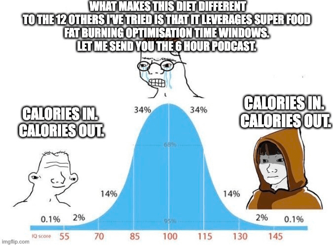
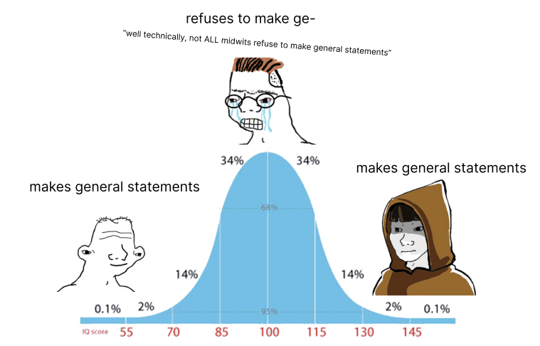

“An idiot admires complexity. A genius admires simplicity.” - Terry Davis
I’ve been obsessed with the Midwit meme for a little over a year now. If the name doesn’t ring a bell, it’s this one:
The meme is is as follows: it’s an IQ “bell curve” where the idiot and the genius have come to the same, simple conclusion while the person in the middle - the “midwit” - arrives at some smart-sounding, but also wildly over-complicated conclusion.
Here are a couple of my favorite examples:



The reason I think this meme fascinates me so much is that I feel like I see it occuring around every corner, especially in my areas of interest, namely language learning and software development.
But what exactly causes this midwit phenomena? Is it just a simple joke with a couple of funny examples? Or is there something deeper going on?
After thinking about it way too much, I’ve come to believe that there actually is a fundamental cause behind the midwit phenomena which I’ll get into here.
At the left end of the curve, we have the idiot. And because he’s an idiot, he can’t handle much complexity. His only possible choice is to opt for the simple conclusion. Pretty self-explanatory.
In the middle, we have the midwit. The midwit isn’t exactly very smart (or dumb), but he is smart enough to handle complexity. And that’s where things start to go wrong. He’s smart enough to handle complexity, but he’s not smart enough to simplify that complexity …which is why he’s left with his overly-complex mess.
On the right end of the curve, we have the genius. Just like the midwit, the genius can also handle complexity. But what differentiates the genius from the midwit is his ability to wrangle that complexity and simplify things back down again. He fundamentally views complexity as a problem - not as a feature - and works hard to avoid complexity wherever it arises.
To programmers reading this, a lot of the above should sound pretty familiar. We all know that it actually isn’t that hard to build a complex project. Even noobs can do it. But things start to get hard when you try to reduce that complexity back down again (or even worse: not introduce that complexity in the first place). To simplify a complex program, you gotta be extra smart.
-Anyways, I think I’ll conclude this little post by recognizing that I may have just accidentally outed myself as a midwit by overcomplicating a very simple meme. The irony is not lost on me though, so maybe there’s hope.